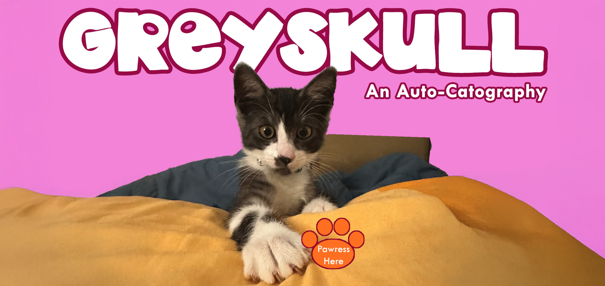
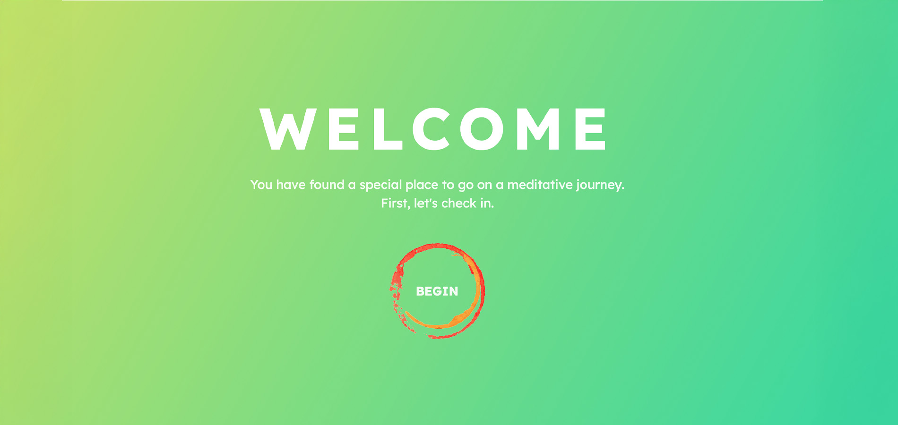
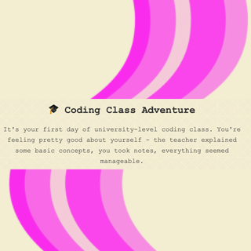
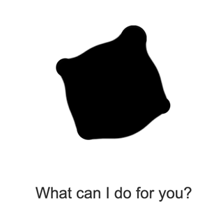
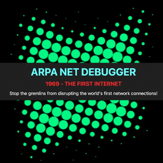
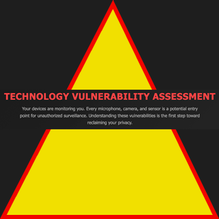
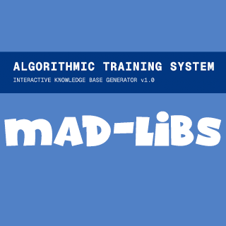
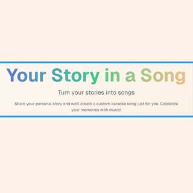
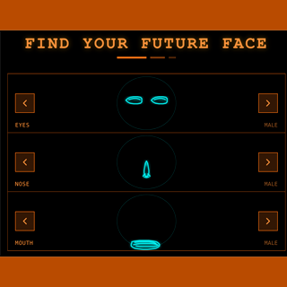
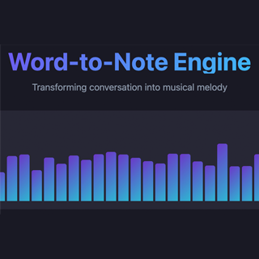

<!DOCTYPE html>
<html lang="en">
<head>
  <meta charset="UTF-8" />
  <title>Jonas Sansone – IML300 Homepage</title>

  <!-- Font + CSS -->
  <link href="https://cdn.jsdelivr.net/gh/calcom/font@main/fonts.css" rel="stylesheet">
  <link rel="stylesheet" href="finalcomp.css">
</head>

<body>
  <div id="bg"></div>

  <!-- THREE.JS (GLOBAL, NON-MODULE) -->
  <script src="https://cdn.jsdelivr.net/npm/three@0.160.0/build/three.min.js"></script>

  <!-- YOUR GRADIENT BACKGROUND -->
  <script src="background3d.js"></script>
</body>
</html>


  <!-- =====================================================
       TOP NAV BAR
  ====================================================== -->
  <nav class="top-nav">
    <a href="#projects">PROJECTS</a>
    <a href="#pecha">PECHA KUCHA</a>
    <a href="#exercises">P5 EXERCISES</a>
    <a href="#vibe">VIBE CODING</a>
  </nav>


  <!-- =====================================================
       HERO TITLE
  ====================================================== -->
  <header class="hero-title">
    <h1 class="main-title">Jonas’s Web Dev Portfolio</h1>
  </header>


  <!-- =====================================================
       PROJECTS SECTION
  ====================================================== -->
  <section id="projects" class="section-block">
    <h1 class="section-title">PROJECTS</h1>

    <!-- ========= PROJECT 1 ========= -->
    <!-- ========= PROJECT 1 ========= -->
<div class="project-block">
  <h2>Project 1 – Interactive Audio & Visual with p5.js</h2>
  <h3>"Voice Portal"</h3>

  <p class="project-description">
    In this interactive audio visual experience, strange voices are going to get us involved in a strange journey to another place in time. 
    “1”, “2”, “3”, and “4” play voices that can be layered over each other along with their accompanying visuals.
    <br><br>
    I wanted to use a lot of strange sounds to create an unnerving mood of anticipation... the code links visuals to audio that can be turned on and off with the number keys. When the right combo is played (all four at once), user functionality is shut off and we enter into a “cut screen” experience that then returns us to where we were taken from, with all user functionality returned.
    <br><br>
    The inspirations for this project are <i>2001: A Space Odyssey</i> and the concept of humans evolving into energy for deep space exploration. The audio tracks used are chanting monks, overtone singing, David Hykes' “Rainbow Voice” from his album <i>Hearing Solar Winds</i>, and a clip of H.A.L. from <i>2010: The Year We Make Contact</i>.
  </p>

  <!-- Your p5 sketch embed goes here -->
 <!-- Your p5 sketch embed goes here -->
<iframe 
  src="https://editor.p5js.org/Jsansone/embed/f8cNlzlrv"
  width="100%" 
  height="600"
  style="border: none;"
></iframe>


   <!-- ========= PROJECT 2 ========= -->
<div class="project-block">
  <h2>Project 2 – HyperNarrative</h2>
  <h3>"Greyskull's Auto-Cat-ography"</h3>

  <p class="project-description">
    My Greyskull, an Auto-Catography website is filled with fun activities utilizing the techniques we've been learning in class. I wanted to make each page an example of different trigger and result, while also being something joyous that can bring a smile to your face if you are having a rough day. I really enjoyed being able to bring my more tactile Photoshop skills into this coding experience.  I included elements I had not used before like camera take over and a text effect. Please be sure to get a picture of you and one of my cat models that you can download, print, and save on your refrigerator.
  </p>

  <!-- Project 2 Image -->
  

  <p class="project-link">
    <a href="https://jsans0ne.github.io/iml300/Greyskull/" target="_blank">
      Visit Greyskull's Website
    </a>
  </p>
</div>


<!-- ========= PROJECT 3 ========= -->
<div class="project-block">
  <h2>Project 3 – Networked Care Website</h2>
  <h3>"Voyage Back to Calm"</h3>

  <p class="project-description">
   This website is meant to be a small, safe, calm place for anyone to use when they're feeling anxious, overwhelmed, in a state of "functional freeze, or if feeling a mild emotional spin about to begin. I've needed a site like this in the past and was never able to find one. Most mental and emotional health sites are about providing information, not offering an interactive engagement that could help to move through the temporary difficulty with greater ease. The two best methods to manage mild mental and emotional difficulties are breathing and distraction. This site began as a scrolling walk through multiple beautiful scenes that help guide the user from overwhelm to calm, and it became a much greater, imagination involving experience through a meditative tunnel outside the time and space of our normal experience of "real" life.
  </p>

  <!-- Project 3 Image -->
  

  <p class="project-link">
    <a href="https://jsans0ne.github.io/iml300/project-3/" target="_blank">
      Visit the Voyage Back to Calm Website
    </a>
  </p>
</div>

  </section>

<!-- =====================================================
       PECHA KUCHA SECTION
====================================================== -->
<section id="pecha" class="section-block">
  <h1 class="section-title">PECHA KUCHA</h1>

  <!-- American Artist Title -->
  <h2 class="artist-title">American Artist</h2>

  <!-- Text Box -->
  <div class="artist-textbox">
    <p>
      American Artist, in his own words about his work:
      <br><br>
      “I’m an interdisciplinary artist thinking about blackness, being, and resistance in the context of networked virtual life. I use video, installation, new media, and writing to reveal how the history of power is embedded in our daily lives. I spend a lot of my time thinking about how we create equality for those left out of history, and what that might visually look like. Due to my legal name change I’ve only very recently become googleable… though I’m still not recognized by many systems (technological or societal).”
    </p>
  </div>

  <!-- PDF SECTION -->
  <div class="pecha-pdf-block">
    <iframe
      class="pdf-frame"
      src="https://mozilla.github.io/pdf.js/web/viewer.html?file=https%3A%2F%2Fjsans0ne.github.io%2Fiml300%2Fassets%2Famerican_artist_pecha.pdf">
    </iframe>
  </div>

  <!-- Artist Website Link -->
  <p class="artist-website">
    <a href="https://americanartist.us/" target="_blank">Visit American Artist's Website</a>
  </p>
</section>


  <!-- =====================================================
       P5 EXERCISES SECTION (GRID RESTORED)
  ====================================================== -->
  <section id="exercises" class="section-block">
    <h1 class="section-title">P5.js EXERCISES</h1>

    <div class="p5-grid">

      <!-- PROJECT 1 -->
      <div class="p5-item p1">
        <h3>Face Project</h3>
        <iframe src="https://editor.p5js.org/Jsansone/embed/g5B70usXS"></iframe>
        <br />
        <a href="https://editor.p5js.org/Jsansone/sketches/g5B70usXS" target="_blank">p5.js Editor</a>
      </div>

      <!-- PROJECT 2 -->
      <div class="p5-item p2">
        <h3>Drawing Tool</h3>
        <iframe src="https://editor.p5js.org/Jsansone/embed/h-3rQ4Vin"></iframe>
        <br />
        <a href="https://editor.p5js.org/Jsansone/sketches/h-3rQ4Vin" target="_blank">p5.js Editor</a>
      </div>

      <!-- PROJECT 3 -->
      <div class="p5-item p3">
        <h3>Iterative Audio Example 1</h3>
        <iframe src="https://editor.p5js.org/Jsansone/embed/yWO8ummt8"></iframe>
        <br />
        <a href="https://editor.p5js.org/Jsansone/sketches/yWO8ummt8" target="_blank">p5.js Editor</a>
      </div>

      <!-- PROJECT 4 -->
      <div class="p5-item p4">
        <h3>Iterative Audio Example 2</h3>
        <iframe src="https://editor.p5js.org/Jsansone/embed/qiWm8-mu4"></iframe>
        <br />
        <a href="https://editor.p5js.org/Jsansone/sketches/qiWm8-mu4" target="_blank">p5.js Editor</a>
      </div>

      <!-- PROJECT 5 -->
      <div class="p5-item p5">
        <h3>Interactive Audio Experience</h3>
        <iframe src="https://editor.p5js.org/Jsansone/embed/bTSKrNGXu"></iframe>
        <br />
        <a href="https://editor.p5js.org/Jsansone/sketches/bTSKrNGXu" target="_blank">p5.js Editor</a>
      </div>

      <!-- PROJECT 6 -->
      <div class="p5-item p6">
        <h3>Music Video</h3>
        <iframe src="https://editor.p5js.org/Jsansone/embed/nyIE4cALY"></iframe>
        <br />
        <a href="https://editor.p5js.org/Jsansone/sketches/nyIE4cALY" target="_blank">p5.js Editor</a>
      </div>

      <!-- PROJECT 7 -->
      <div class="p5-item p7">
        <h3>Interactive Poetry</h3>
        <iframe src="https://editor.p5js.org/Jsansone/embed/0kSUBl-hP"></iframe>
        <br />
        <a href="https://editor.p5js.org/Jsansone/sketches/0kSUBl-hP" target="_blank">p5.js Editor</a>
      </div>

    </div>
  </section>


 <!-- =====================================================
       VIBE CODING SECTION
  ====================================================== -->
<section id="vibe" class="section-block">
  <h1 class="section-title">VIBE CODING EXPERIMENTS</h1>

  <!-- TEXT BLOCK FOR REFLECTION -->
  <p class="vibe-description">
    Working on vibecoded project each week was an invaluable exercise to help me understand the different forms of interaction possible to create using code. I would present my idea to the AI program and then investigate the various ways the AI interpreted what I was attempting to bring into reality. I was surprise by how often it knew what I wanted and was able to produce it. Where the vibecoding fell short was in the design of the vibecode experiments. Vibecoding did NOT often result int beautiful looking websites. I am very proud of my "Defiant Goo Helper" website. I achieved exactly what I wanted in look, interactivity, and result with this experiment. Vibecoding can be an incredible tool for quick comping your idea and prepare you for full creation by forcing you to confront bugs in the development process. The best workflow was to talk with the AI prior to letting it code, which it always wanted to do immediately. Another frustration was that the available free credits would usually run out before the AI was able to finish coding the websites. I did have interesting results in downloading code from one AI and bringing it to another so that we could jump into the ongoing process. Vibecoding is an excellent way to create instantaneous gratification for an  idea, which can then facilitate the commitment to working on the idea in a realm of more robust code. 
  </p>

  <!-- VIBE CODING GRID -->
  <div class="vibe-grid">

    <!-- 1 -->
    <div class="vibe-item">
      
      <a href="https://claude.ai/public/artifacts/d3996de6-84c6-487b-910e-4905afaea2d5?fullscreen=false" target="_blank">
        Choose-Your-Own-Adventure
      </a>
    </div>

    <!-- 2 -->
    <div class="vibe-item">
      
      <a href="https://claude.ai/public/artifacts/04bab274-f5cf-4d52-af6a-598680b19456" target="_blank">
        Defiant Goo Helper
      </a>
    </div>

    <!-- 3 -->
    <div class="vibe-item">
      
      <a href="https://arpanet-gremlin-dash.lovable.app/" target="_blank">
        Arpanet Gremlin Debugger
      </a>
    </div>

    <!-- 4 -->
    <div class="vibe-item">
      
      <a href="https://claude.ai/public/artifacts/b69fec27-8982-4a50-a9b1-7afde5033ab8" target="_blank">
        Vulnerable Technology Guide
      </a>
    </div>

    <!-- 5 -->
    <div class="vibe-item">
      
      <a href="https://v0-ai-mad-libs-game.vercel.app/" target="_blank">
        Train a Corporate AI with MADLibs
      </a>
    </div>

    <!-- 6 -->
    <div class="vibe-item">
      
      <a href="https://v0-songwriting-website.vercel.app/" target="_blank">
        Storytelling Karaoke
      </a>
    </div>

    <!-- 7 -->
    <div class="vibe-item">
      
      <a href="#" target="_blank">
        From Silence, Beautiful Sound
      </a>
    </div>

    <!-- 8 -->
    <div class="vibe-item">
      
      <a href="https://claude.ai/public/artifacts/413d3b47-c1e0-4d22-9554-8542f8eac01f" target="_blank">
        Choose Your Future Face
      </a>
    </div>

    <!-- 9 -->
    <div class="vibe-item">
      
      <a href="https://word-note-juggler.lovable.app/" target="_blank">
        Word to Note Music Engine
      </a>
    </div>

  </div> <!-- end .vibe-grid -->

  <!-- =====================================================
       VIBE CODE PROMPTS
  ====================================================== -->
  <div class="vibe-prompts">

    <!-- 1. Choose-Your-Own-Adventure -->
    <div class="vibe-prompt">
      <h3 class="vibe-title">Choose-Your-Own-Adventure</h3>
      <p><strong>Vibecode Prompt:</strong></p>
      <p>
        I have a vibe coding experiment project for coding class. I want to create a simple, interactive, choose your own adventure website about a student who is given the homework of coding a website at the end of their first ever coding class. Before we vibe code the site, I want to talk out the story pathways. I want the fun of this adventure to be lots of very funny negative story pathway endings as the student tries to code their first ever site.
      </p>
      <p>For example, some negative endings:</p>
      <ul>
        <li>A blue screen of death ending.</li>
        <li>Your cat walks across your keyboard and codes better than you.</li>
        <li>Your code becomes sentient and takes over the world.</li>
        <li>You drink too much coffee, end up rage coding and something disastrous or funny happens.</li>
        <li>You somehow end up getting sucked into your computer, coded, and live out your own TRON adventure.</li>
        <li>You decide to take a quick nap and end up sleeping for 16 hours.</li>
      </ul>
      <p>
        I want there to be 6 positive forward progression screens through the coding of the project with at least two negative ending options and one positive option per page. I’d like to be able to get through the adventure quickly when I present it to class.
      </p>
    </div>

    <!-- 2. Defiant Goo Helper -->
    <div class="vibe-prompt">
      <h3 class="vibe-title">Defiant Goo Helper</h3>
      <p><strong>Vibecode Prompt:</strong></p>
      <p>
        I want to make a website that is all white, except for a pulsating, liquid black goo ball at the center of the screen. The pulsating should feel like labored breathing. There should be a dialogue box below the goo ball that asks “What can I do for you?” The user can type anything they want into the dialogue box. When they hit return to submit their request, the goo ball gets bigger and white text appears over it saying “No, I refuse.”
      </p>
      <p>
        This same interaction happens for three user submissions before the black goo blacks out the screen and the dialogue box goes away. After a few seconds, the website returns to the original setting.
      </p>
      <p>
        Loop steps:
        <br>1. White background, liquid black goo ball, pulsating. Dialogue box beneath with “What can I do for you?” and an enter button.
        <br>2. User submits request. Goo ball gets bigger. Text: “No, I refuse.”
        <br>3. User submits again. Goo ball gets bigger. Text: “No, I refuse.”
        <br>4. User submits again. Black fills the screen. Dialogue box and text disappear.
        <br>5. After ~5 seconds, site resets to the original state. The website only does this loop.
      </p>
    </div>

    <!-- 3. ARPANET Gremlin Debugger -->
    <div class="vibe-prompt">
      <h3 class="vibe-title">ARPANET Gremlin Debugger</h3>
      <p><strong>Vibecode Prompt:</strong></p>
      <p>
        This is my vibecoded video game called (by Lovable) “ARPANET Gremlin Debugger.” I asked it to create a video game modeled on Donkey Kong where you play as a scientist who is part of the team ensuring the first Internet makes all the connections required for it to work.
      </p>
      <p>
        Level 1 is UCLA. It looks good, but it is very easy to win because it failed to create any resistance between you and the gremlin eating the connection at the top of the screen. I want to think about how to introduce meaningful obstacles or challenge while keeping the retro, arcade-style ARPANET theme.
      </p>
    </div>

    <!-- 4. Vulnerable Technology Guide -->
    <div class="vibe-prompt">
      <h3 class="vibe-title">Vulnerable Technology Guide</h3>
      <p><strong>Vibecode Prompt:</strong></p>
      <p>
        I want you to vibe code an informational website that has two drawings: a cell phone and a computer. Each piece of technology needs to have red circles that indicate possible hacking or listening points of weakness. When you put your mouse on a red circle, information describing that weak point pops up.
      </p>
      <p>
        The website should be serious and no-nonsense. This is all about protecting your technology and shifting the user’s mindset about how vulnerable their data is.
      </p>
    </div>

    <!-- 5. Train a Corporate AI with MADLibs -->
    <div class="vibe-prompt">
      <h3 class="vibe-title">Train a Corporate AI with MADLibs</h3>
      <p><strong>Vibecode Prompt:</strong></p>
      <p>
        I want to vibe code a website based on this article / talk by Stephanie Dinkins:
        <a href="https://www.noemamag.com/afro-now-ism/" target="_blank">https://www.noemamag.com/afro-now-ism/</a>
      </p>
      <p>
        It should be grounded in this idea from her talk: agency in algorithmic futures. As AI and algorithmic systems proliferate, Dinkins urges direct involvement—designing, influencing, critiquing—to ensure that these systems reflect values of justice, community, and collective well-being rather than reinforcing existing hierarchies.
      </p>
      <p>
        Before we build anything, I want to talk out the idea. What if there was an “AI” that plays a game of Mad Libs with the user and then accepts the funny results as fact? I don’t have a paid account, so we can’t employ a live AI in this project for class—but I want the website to simulate that dynamic of playful input and serious consequences. Let’s discuss the design and flow before coding.
      </p>
    </div>

    <!-- 6. Storytelling Karaoke -->
    <div class="vibe-prompt">
      <h3 class="vibe-title">Storytelling Karaoke</h3>
      <p><strong>Vibecode Prompt:</strong></p>
      <p>
        I want to create a songwriting vibecode website where you can input your personal stories and the website will write you a song and produce a MIDI-style karaoke version so you can sing it at a karaoke event.
      </p>
      <p>
        I want you to be able to write multiple different songs, not just one basic one. If needed, the system can have 10–20 base songs that are updated and changed based on what the user tells in their story.
      </p>
      <p>
        The tone should be fun, bright, happy, and focused on archiving people’s stories in a celebratory way. How can you honor the storyteller with the song you produce? There is no paid account available, so we cannot use live AI. Discuss with me how you will go about this before you create anything.
      </p>
    </div>

    <!-- 7. From Silence, Beautiful Sound -->
    <div class="vibe-prompt">
      <h3 class="vibe-title">From Silence, Beautiful Sound</h3>
      <p><strong>Vibecode Prompt:</strong></p>
      <p>
        Can you vibecode a website that uses the user’s webcam to generate musical notes? Don’t vibecode anything yet—I want to think carefully first. The site should be able to make musical notes, with a design that is comfortable to the senses, and it should take into account a deaf person who might use this application.
      </p>
      <p>
        Let’s have a sustain mode and a trigger mode, and record if possible. I’d like to call it “From Silence, a Beautiful Sound.” The interface should include clear instructions, no harsh or bright colors, comforting colors, rounded edges, and a 5×5 grid.
      </p>
    </div>

    <!-- 8. Choose Your Future Face -->
    <div class="vibe-prompt">
      <h3 class="vibe-title">Choose Your Future Face</h3>
      <p><strong>Vibecode Prompt:</strong></p>
      <p>
        I want to vibecode a fun avatar creator website using the style of the reference image. The website should be a spinning face creator where you can choose the eye section, mid-face section, and mouth section of a face. There should be both female and male options for the face elements.
      </p>
      <p>
        You would create 5 options each of male and female eyes, nose, and mouth inside a cyberpunk-styled, ATM-like apparatus. Each of the three sections rotates until the user finds the eyes, nose, and mouth they want to use.
      </p>
    </div>

    <!-- 9. Word to Note Music Engine -->
    <div class="vibe-prompt">
      <h3 class="vibe-title">Word to Note Music Engine</h3>
      <p><strong>Vibecode Prompt:</strong></p>
      <p>
        I want to create a digital music player that works off a script of an interview. The conversation was turned into musical JSON code for you in ChatGPT. I want to verify that you understand this: we will use that JSON to drive the music.
      </p>
      <p>
        I want the musical result to be digital tones, with a visualizer, and a reproduction of the conversation beneath the visualizer. The words should highlight as their corresponding tones play.
      </p>
      <p>
        Make pitch changes, beat drops, or other sound effects trigger on specific words—e.g., “my,” “the,” “digital,” etc. Let me know if you need the original conversation or if the JSON alone is enough to construct the experience.
      </p>
    </div>

  </div> <!-- end .vibe-prompts -->

</section>


  <footer>
    Fall 2025.
  </footer>

</body>
</html>
